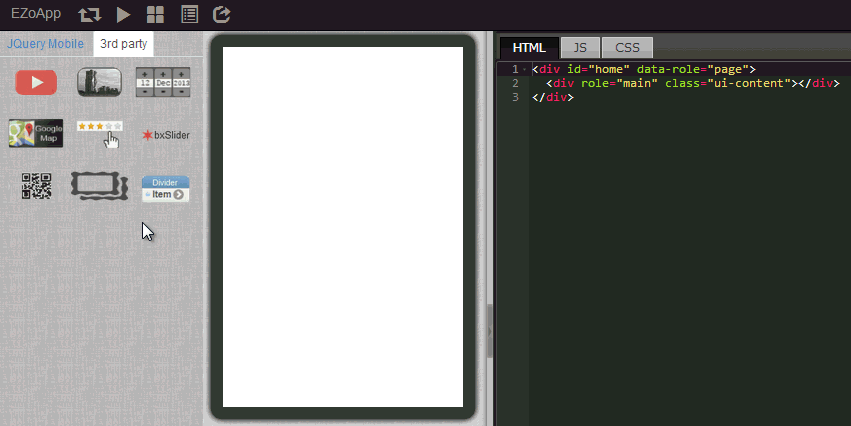

EZoApp 除了擁有 jQuery Mobile 的套件之外，也有 EZo 開發團隊自行研發的許多第三方元件 (3rd Party)，除了前幾節介紹的地圖與滑動頁面之外，另外一個相當具有特色的元件就是 raty 這個利用星星給分的評分元件。
就如同現在的許多歌唱或選秀節目，也如同 Google Play 或 App Store 上頭的給分機制一般，越來越多的 App 或網站都會提供使用者相關的給分機制，除了可以讓使用者參與內容品質的把關，也可以立即收到使用者的使用回饋。不過這個道理雖然大家都明瞭，但俗話說知易行難，背後的技術往往讓使用者不知道如何下手進行。
EZoApp 所提供的 raty 元件，可以快速的產生星星給分的機制，只需要撰寫相當簡單的程式碼，就能夠進行給分的動作，非常的實用喔！
範例連結：
結合 JavaScript 應用 - 星號分數評比

與前面章節提過的步驟相同，利用拖曳的方式，將 3rd Party 中的 raty 元件拖曳進入編輯畫面。
與 raty 元件同樣的做法，在左側將 navbar 元件拖曳進入編輯區域，然後可以點選 raty 當中的按鈕，按下右上角的新增圖示，就可以新增按鈕。

所有元件都具備之後，接著就要讓兩個元件之間連動，也就是點選按鈕，會出現相對應的星號，而我們的連動機制是使用 EZoApp 獨有的 gk 元件，因為 gk 元件將許多程式都已經處理完成，我們幾乎只要打幾個字，就可以輕鬆完成連動的作業。
不過在進行連動之前，我們要先把 navbar 內加上一些標籤屬性，方便連動的時候有個對照的數值。
HTML 頁籤程式：
<div id="home" data-role="page">
<div data-role="header" data-position="fixed" data-theme="b">
<h3>Score</h3>
</div>
<div role="main" class="ui-content">
<div is="raty" score="0" id="star1"></div> //設定一開始為零顆星
<div data-role="navbar" id="star_btn1" style="margin:10px 0 30px;">
<ul>
<li>
<a num="1">不好</a> //按下不好顯示一顆星
</li>
<li>
<a num="3">普通</a> //按下普通顯示三顆星
</li>
<li>
<a num="5">很好</a> //按下很好顯示五顆星
</li>
</ul>
</div>
</div>
</div>
JS 頁籤程式：
$(document).on('pageinit', function () {
$('#star_btn1').on('click', function (e) {
var starnum = $(e.target).attr('num');
$('#star1').gk('score', starnum); //使用 gk 元件
});
});

按下 Preview 之後，我們就可以順利的看到點選按鈕，出現對應的星星數囉！
範例連結：
結合 JavaScript 應用 - 星號分數評比